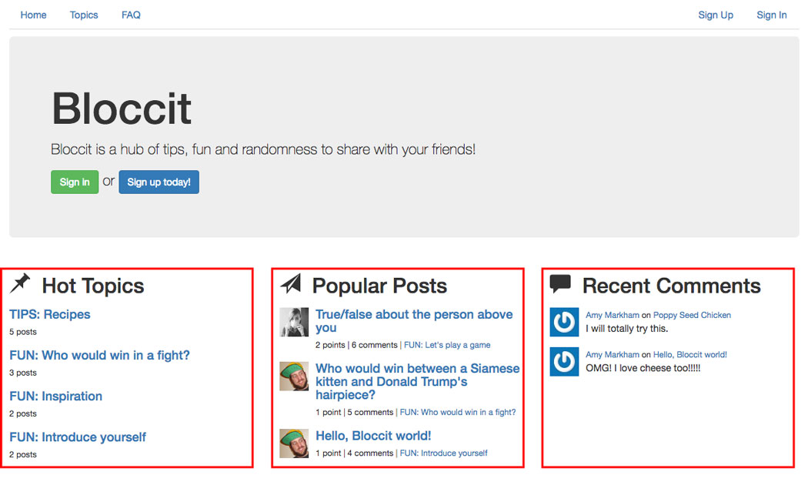

After focusing on front-end web development with projects including Bloc Jams and Bloc Chat, it was time to transfer over to back-end web development. And thus began my love affair with Ruby! After spending so much time with JavaScript, it was kind of difficult to make the change to Ruby — but only kind of, and not for long. First of all, programmers aren't joking when they say Ruby was written to be programmer-friendly. Basically, instead of having to accommodate JavaScript's dependence on semicolons, parentheses, brackets and other complicated syntax markers, you can essentially write English with Ruby. (Obviously, there's much more to it than that, but as a beginner, that was the aspect of Ruby that originally excited me.)
As a 50% left brain / 50% right brain person, I love that there's both an art and a logic to coding, and working with Ruby really brought that home for me. What's more, I had a suspicion that I'd love working with data (like, I'm slightly obsessed with looking at web analytics, and I actually enjoy tracking my budget and financial goals), and learning how to build a database, seed it with data, then use the Ruby console from the command line to access and manipulate that data made me literally ask out loud, "Ruby, where have you been all my life?!"
As you'll see with this project, Bloccit is meant to be similar to the popular forum website Reddit. Just like with Reddit, users make an account, write posts under topics, comment on posts, vote posts up or down to give each post a number that tracks its reputation, and mark posts as favorites to receive notifications of new comments on those posts. In addition to standard users, there are also administrators who can be sure to keep everything in line with the ability to edit and delete anything that might not be welcome on the site.
Since this was the first project of Bloc's back-end curriculum, a lot of it was mostly spelled out. For example, for each checkpoint, Bloc would walk me through how to implement a feature, but then at the end of that checkpoint, I'd be given an assignment to complete on my own. Sometimes it was simply implementing the feature again but in a different way, and sometimes it would be refactoring or customizing the feature.
I found that as I got toward the end of the project, I had a lot of ideas for features I wanted to implement that weren't included in the curriculum at all, and I simply was not satisfied without them. The largest of these features is what's on the front page of Bloccit, which is a collection of recent activity on the site in the form of hot topics, popular posts and recent comments:
This required a few different steps:
1. Tracking how many posts belonged to each topic and how many comments belonged to each postBecause my database was already set up with the belongs to/has many active record associations between posts/topics and comments/posts, I knew there was a way I could query the database to create these lists. However, as I searched Google and read through Stack Overflow solutions, I kept seeing counter columns being discussed. Essentially, instead of relying on the active record associations for these lists, I could simply create a column in the topics table that would hold the number of posts belonging to each topic, and again in the posts table to hold the number of comments.
I liked this idea a lot, but I was a bit nervous about going outside the curriculum to make changes to my database. The thought of thoroughly messing it up and destroying all of my hard work was holding me back, but then I just had to remind myself: this is what version control is for. (Seriously, thank the universe for version control!).
In db/migrate:
class AddPostsCount < ActiveRecord::Migration[5.1]
def change
add_column :topics, :posts_count, :integer, :null => false, default: 0
end
end
class AddCommentsCount < ActiveRecord::Migration[5.1]
def change
add_column :posts, :comments_count, :integer, :null => false, default: 0
end
end
Now that I had my counters set up, I could write a simple custom scope to rank the topics and posts from the highest number in the counter column to the lowest. That means whatever topic had the most posts would be at the top of my list, and the post with most comments would be at the top. Note: I decided to order popular posts by number of comments rather than overall votes because I thought, what if there's a post that people really hate and downvote, but that post has all the action because everyone is commenting on it?
In app/controllers/welcome_controller.rb:
def index
@popular_topics = Topic.reorder('posts_count DESC').limit(4)
@top_posts = Post.reorder('comments_count DESC').limit(3)
@recent_comments = Comment.order('created_at DESC').limit(2)
end
With the code above, you can see that popular_topics (aka "hot topics") and top_posts (aka "popular posts") use the counters in descending order. However, recent_comments (aka "recent comments" — simple enough!) are ordered by the time they're created, which is an automatic feature of rails, so I really didn't have to do anything special there.
The other thing to note about the code above is the "limit()" number. Four topics, three posts, two comments — it's exactly what you see on the front page.
3. Writing partials to display each listI learned through my mentor that, instead of having all of my display code in one long document, it's much better to break it up into pieces. For Ruby, that means using partial templates to break down the code into manageable chunks, then rendering the partials individually.
In app/views/topics/_popular_topics.html.erb:
<% @popular_topics.each do |topic| %>
<div class="media">
<div class="media-body">
<h4 class="media-heading">
<%= link_to topic.name, topic %>
</h4>
<small>
<%= topic.posts.count %> posts
</small>
</div>
</div>
<% end %>
In app/views/posts/_top_posts.html.erb:
<% @top_posts.each do |post| %>
<div class="media">
<div class="gravatar">
<%= image_tag post.user.avatar_url(42) %>
</div>
<div class="media-body">
<h4 class="media-heading">
<%= link_to post.title, topic_post_path(post.topic, post) %>
</h4>
<small>
<%= pluralize(post.points, 'point') %> | <%= pluralize(post.comments_count, 'comment') %> | <%= link_to post.topic.name, post.topic %>
</small>
</div>
</div>
<% end %>
In app/views/comments/_recent_comments.html.erb:
<% @recent_comments.each do |comment| %>
<div class="media">
<div class="gravatar">
<%= image_tag comment.user.avatar_url(42) %>
</div>
<div class="media-body">
<small>
<%= link_to comment.user.name, user_path(comment.user) %>
on <%= link_to comment.post.title, topic_post_url(comment.post.topic, comment.post) %>
</small><br>
<%= comment.body %>
</div>
</div>
<% end %>
And finally, on the homepage, in app/views/welcome/index.html.erb:
<div class="row">
<div class="col-md-4">
<h2>Hot Topics</h2>
<%= render "topics/popular_topics" %>
</div>
<div class="col-md-4">
<h2>Popular Posts</h2>
<%= render "posts/top_posts" %>
</div>
<div class="col-md-4">
<h2>Recent Comments</h2>
<%= render "comments/recent_comments" %>
</div>
</div>
The best part of this whole project was the testing. Since I've been a self-taught developer for years, it's an old habit to throw code at a wall and see what sticks. Write a little bit here, refresh the page to see what happened. Write a little more over here, refresh the page again. And over and over and over ... you get the idea. But with Ruby on Rails, I learned all about test-driven development and why it's so much more efficient to think about what you need your application to do, write the tests that would ensure the application does just that, then finally write just the code you need to make those tests pass. No need for a bloated, heavy web app that leaves you wondering if it's actually going to work — with test-driven development, it's guaranteed to work.
Writing spec tests and running them from the command line was interesting enough, but what really made it fun was adding the Nyan Cat Formatter. If you have to run a bunch of tests multiple times, why not include a little Nyan magic, right?
Finally, the best part about testing the whole thing out was asking my friends to use Bloccit. Not only did it give me real-world data in my database, but it gave me the opportunity to get feedback on things that you can't test with specs, like the user experience and additional features they'd like to see. No doubt in the world, I have some of the best friends — they were just as excited about Bloccit as I was.
Date: July-August 2017
Project Checklist: Ruby, Rails, HTML5, CSS3, Bootstrap, PostgreSQL
Built for Bloc.io